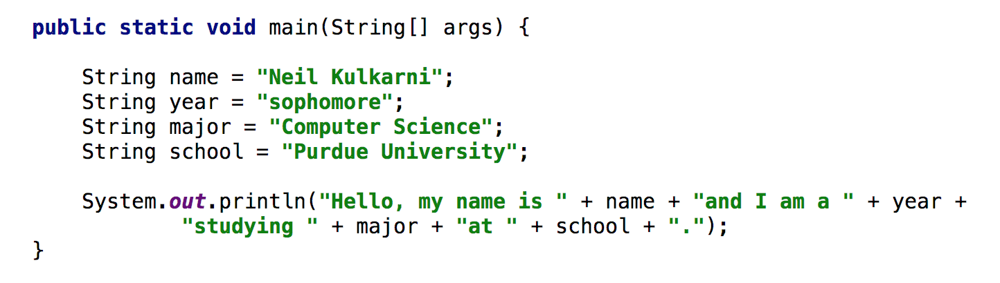
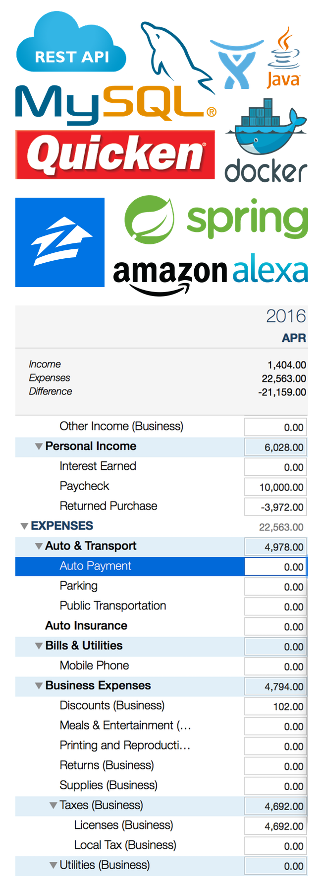
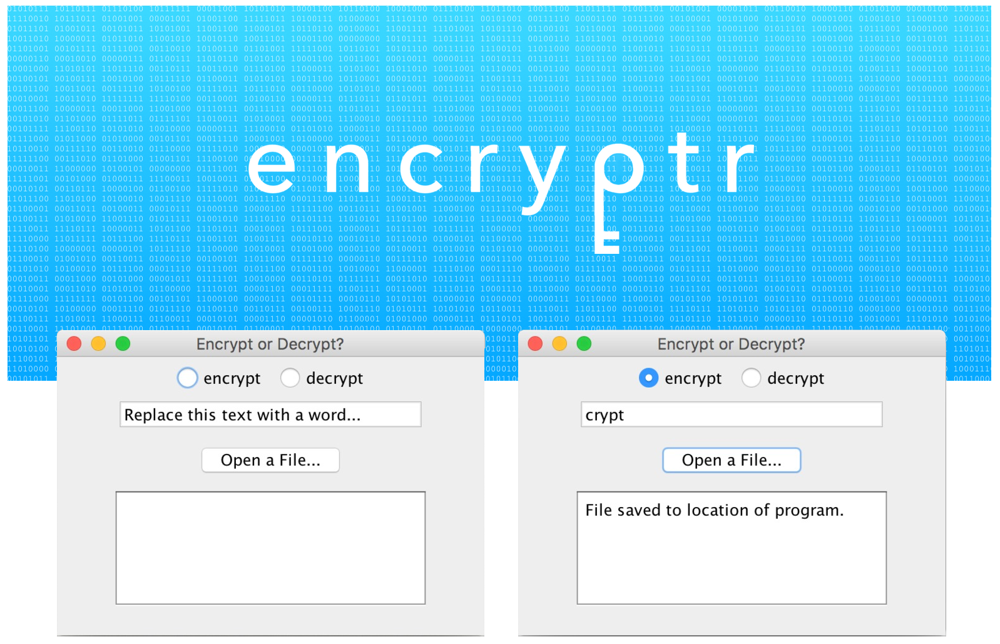

Object-oriented programming. Data structures. Algorithms. Knowing the theory and concepts is interesting, but the fun is in applying them. See some of those applications in Projects.
Next semester, I begin streamlining my major to focus on product development. The coursework attributed to this begins with specializing in three tracks:
>> Software Engineering
>> Machine Intelligence
>> Database and Information Systems
The Software Engineering track delves into the product life cycle, specifically emphasizing design, implementation, and testing through self-led projects. The Machine Intelligence and Database and Information Systems tracks offer courses about data science, machine learning, and artificial intelligence to provide insight into the applications of Big Data.
More details regarding coursework can be found on my LinkedIn.
What does it mean to experience the product development life cycle? My experience at Quicken this past summer offered some insight...
Customer First.
This is one of Quicken's founding values. As a leader in creating software to manage personal finance, it is of utmost importance that the product respects the expectations of its customers and helps simplify their lives.
For example, the microservice I implemented was the result of customer feedback requesting a simpler mechanism to track their home value. With an integration with the property value estimator Zillow®, we allowed users to see the market value pricing for their property without leaving the app and encouraged automated quarterly reminders to ensure that users are aware of value fluctuations.
Industry Standard Technology.
With over one million users, enormous amounts of data pass through Quicken's servers everyday. And to manage all that data, our microservice has to cutting-edge technology to manage the flow. RESTful APIs allows scalability and assures that any tool that understands HTTP can interact with the service. A Spring Framework containerizes the Java application such that Hibernate and MySQL can be used to easily persist and visualize data. Using testing tools such as Docker to package the application and run it ensures portability and client-server modeling.
Cutting-Edge Technology.
Mainframes. Desktops. Laptops. Mobile. What's next? Voice. Everyday, we witness how technology is integrated into our day-to-day lives. Our devices are more contextually aware and are capable of providing personalized information. The clearest example of this is through voice services.
At Quicken, we invested in Alexa, Amazon Echo's voice assistant. Through this endeavor, it was possible to create queries like:
>> How much did I spend at Nordstrom last week?
>> How is my Intuit stock doing today?
>> What is my coffee budget for today?
Intelligent queries create a dialogue with the voice service that demonstrates an all-new interaction model with our personal finances.

Portfolio
You're looking at it right now! This is my portfolio, showcasing the different aspects of my career progress. The site is made entirely from scratch using a HTML, CSS, and JavaScript to make it clean, smooth, and effortless to use. It is still a work in progress with lots of improvements to come. Look forward to animated images and a better flow of the single-page site.

Encryptr
Encryptr puts your personal security first. We all have personal files on our computers and some of them, such as your financial documents, could use some added protection. Encryptr allows you to encrypt and decrypt your text files using the Vigenère cipher so that your personal documents remain secure.
Take a look at the code on GitHub.
Read more about it on Devpost.
Progress
Progress is a task manager that helps users organize their work and start making progress. Everyone organizes their work differently. Some people order their tasks by the date it is assigned. Some people prefer to mark the date they plan on working on it. Others keep track of when it is due. With Progress, you can order your tasks in any of those ways with the freedom of changing the organization scheme with one click. In addition, for every task you complete on time, you are awarded points that you can keep track of in your Progress tab.
Take a look at the code on GitHub.